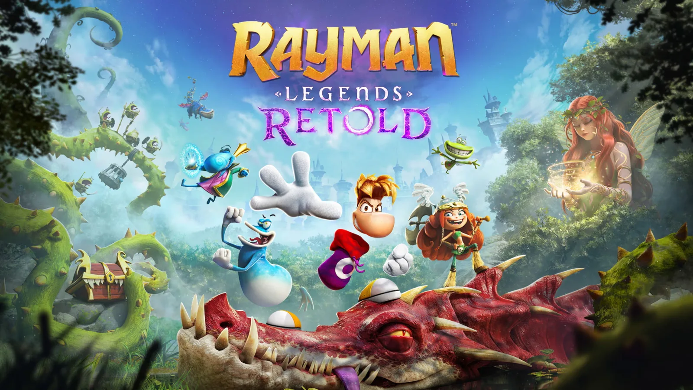

Luiso · 15 de septiembre de 2026 · 2 min de lectura
Los seguidores de Rayman tendrán que esperar un poco más para regresar a uno de los clásicos de la franquicia. Ubisoft confirmó que Rayman Legends Retold fue retrasado del 1 de octubre al 3 de diciembre de 2026.
La decisión resulta particularmente llamativa porque el juego ya terminó oficialmente su desarrollo, lo que en la industria se conoce como haber alcanzado el estado “gold”. Aun así, Ubisoft decidió posponer el lanzamiento para disponer de más tiempo de trabajo antes de ponerlo a la venta.
La compañía explicó que quiere asegurarse de que cada detalle del remake reciba el cuidado necesario.
Aunque Rayman Legends Retold no llegará en octubre, Ubisoft no piensa dejar a los jugadores sin novedades.
El 22 de septiembre se publicará un nuevo tráiler con una descripción general de la propuesta. Ese mismo día también aparecerán nuevas impresiones de prensa y creadores de contenido que ya tuvieron acceso al juego.
Será una oportunidad para conocer mejor cómo Ubisoft Montpellier reconstruyó el clásico y qué diferencias tendrá respecto del Rayman Legends original.
El remake incorporará nuevos gráficos en 3D, un mundo completamente nuevo, cinemáticas con voces, una banda sonora ampliada y cooperativo local para hasta cuatro jugadores. También regresará Kung Foot, el modo competitivo basado en fútbol que acompañó al juego original.
El retraso también llega en un momento particularmente complicado para el calendario de lanzamientos.
El final de septiembre y el comienzo de octubre acumulan varios juegos importantes, después de que distintos estudios hayan reorganizado sus fechas para evitar coincidir con Grand Theft Auto VI.
Control Resonant, Gears of War: E-Day, Silent Hill: Townfall y Minecraft Dungeons 2, entre otros, forman parte de un período particularmente cargado.
Rayman Legends Retold tendrá ahora un poco más de espacio para encontrar su público.